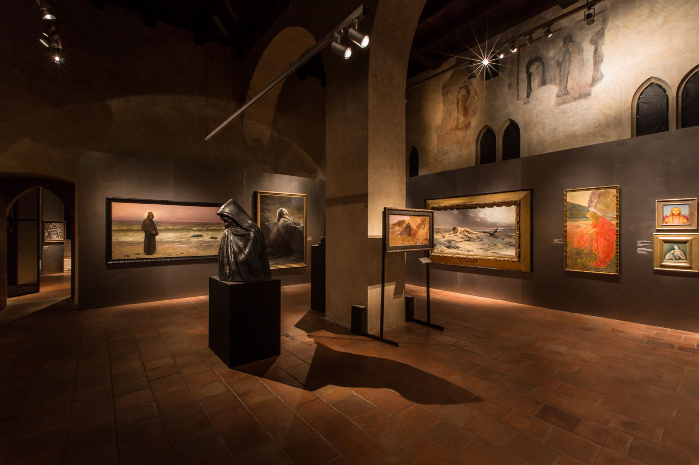
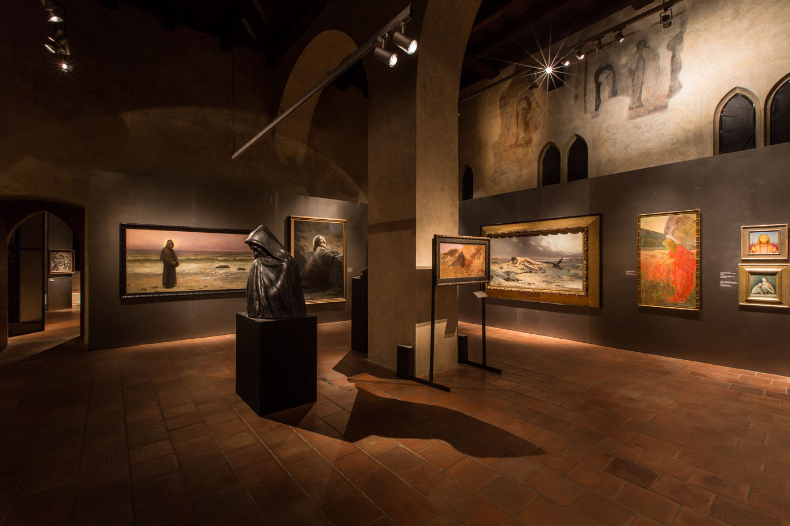
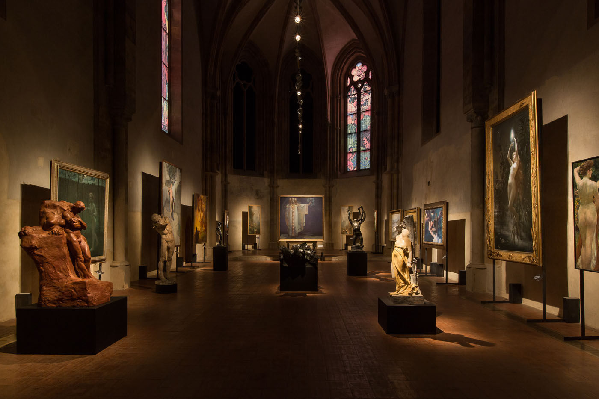
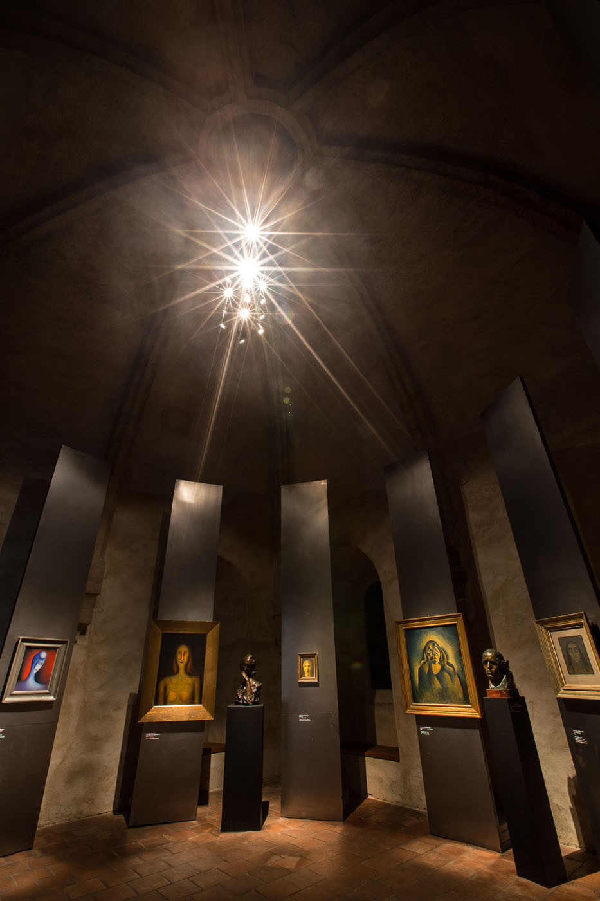
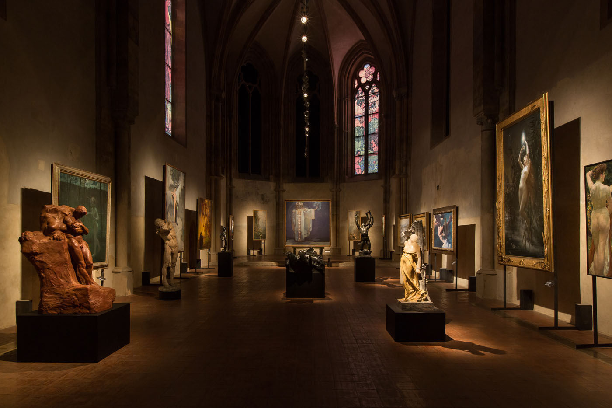
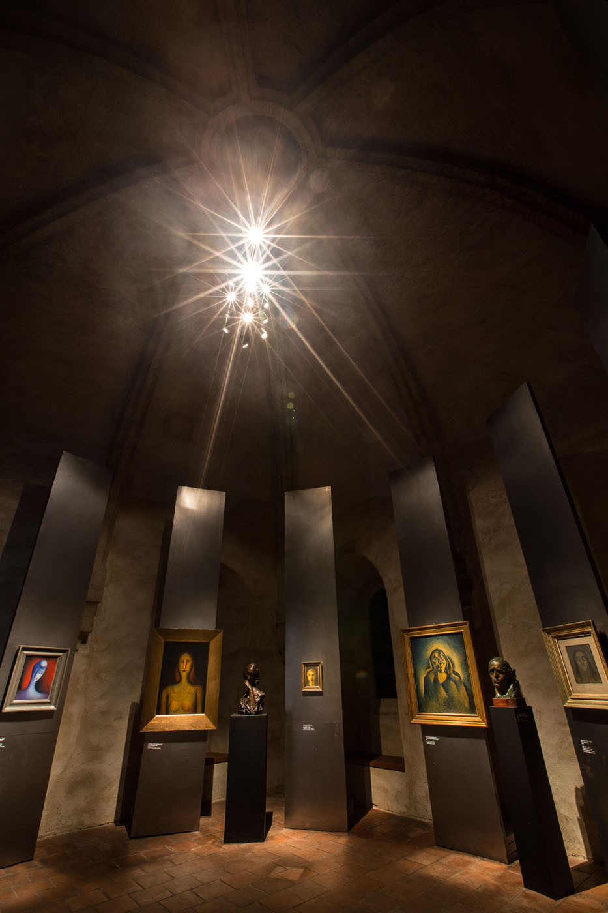
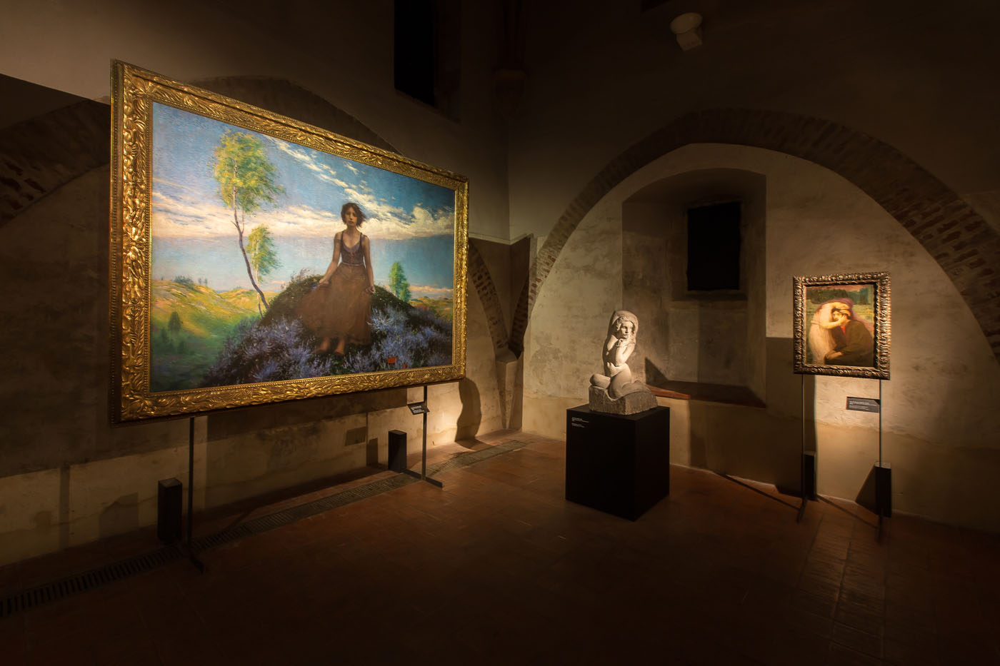
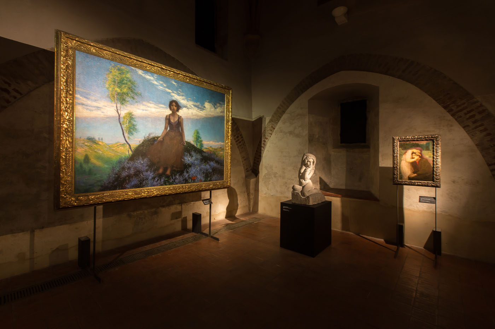
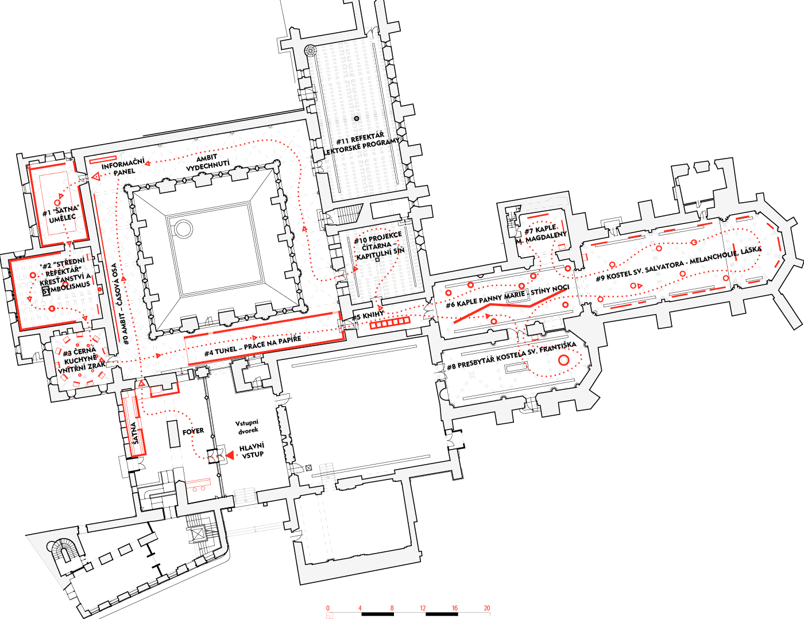

-


 
 

 



-



Národní galerie – Tajemné dálky
Datum konání: 22.4.2015 - 27.9.2015
Místo konání: Klášter sv. Anežky České
Od počátku prací na výstavě Tajemné dálky jsme věřili že gotické prostory Anežského kláštera musí symbolistními výtvarnými díly vytvářet symbiózu, než kontrast. Šlo o to udělat z prázdného chrámu, chrám umění. Tradiční duchovní prostory naplněné uměním, které hledá duchovno v překotné době, kdy se na úkor pokroku tradiční hodnoty ztrácí.
Při vytváření expozice Tajemných Dálek, symbolismus v českých zemích v komplikovaných a rozmanitých prostorách kláštera sv. Anežy České bylo nutné učinit provést diváka expozicí správným směrem a především vytvořit atmosféry šité na míru jednotlivým prostorám.
Výstava začíná v ambitu kláštera historickou osou na jejímž konci je panel s logem výstavy. Výstava začíná třemi menšími místnostmi bývalou šatnou, refektářem a černou kuchyní. Abychom udrželi kontinuitu výstavy a umožnili vystavit díla se specifickými světelnými požadavky bylo nutné do ambitu vystavět dlouhou místnost tzv.černý tunel. Tento tunel slouži nejen jako spojovací prvek mezi třemi místnostmi v první části expozice a velkým finálem v kostelech Panny Marie a mauzoleu sv. Salvátora, ale především jako hlavní pohledová osa - páteř výstavy. V kostlech i dalších místnostech byla vytvořena tajemná atmodséra a to dvěma nástroji, jednak celkévým zatmavením oken a především zvolením specifické paneláže pokryté nelakovaným plechem. Plechové panely umocňovali atmosféru děl na nich umístěných a v odlescích symbolizovali jejich skrytý význam. V kostele panny Marie a v mauzoleu sv. Salvatora byla vystavena velkoformátová díla a sochy. Velkoformátová díla byla umístěna v kostele sv. Salvátora tak jako by to byly oltáře.
Výstava Tajemné dálky byla zakončením dlouhodobého badatelského projektu historika umění Otto M. Urbana, který se touto tematikou více než desetiletí zabýval a souběžně s výstavou byla vydána obsáhlá monografie.
Tajemné dálky: symbolismus v českých zemích, 1880 – 1914
Výstava Tajemné dálky, symbolismus v českých zemích se věnuje specifické části výtvarné umělecké scény v českých zemích, ovlivněné symbolismem v období mezi lety 1880 a 1914. Datace výstavy je pomyslně rámována dobou otevření Národního divadla a začátkem první světové války, název je odvozen z titulu básnické sbírky Otakara Březiny z 90. let 19. století. Výstava je prvním podobným projektem, až do současnosti byl symbolismus prezentován jako specifická kapitola v rámci rozsáhlejších výstavních projektů. V jednotlivých tematických kapitolách se tak představují vedle známých a uznávaných umělců (Alfons Mucha, Max Švabinský, František Bílek, Josef Váchal, Bohumil Kubišta, Jan Zrzavý ad.) i autoři méně vystavovaní a zvláště v mezinárodním kontextu téměř neznámí (Maxmilián Pirner, Beneš Knüpfer, August Brömse, Jaroslav Panuška, Josef Mandl, Tavík František Šimon, Alois Boháč aj.). Exponáty jsou jak z velkých etablovaných galerií (Národní galerie v Praze, Galerie hlavního města Prahy nebo Památník národního písemnictví), tak z menších museí a regionálních institucí, stejně jako ze soukromých sbírek. V několika případech se jedná i o zápůjčky ze zahraničí (Řezno, Oslo, Paříž). Vedle známých jsou zde tak představeny i doposud nevystavené práce. Jakkoli výstava tematicky vychází a navazuje na expozice, které v rámci tohoto projektu proběhly v Krakově a Olomouci, její struktura je od předcházejících poněkud odlišná, neboť vychází ze specifických podmínek kláštera sv. Anežky České. Na rozdíl od zmíněných prezentací tvoří jádro výstavy soubor děl ze sbírek Národní galerie v Praze. Jedná se často o zásadní práce, které se zde objevují v novém kontextu. Výrazně větší je také soubor vystavených knih.
Bylo to právě v prostředí symbolismu, kde se poprvé a nejvýrazněji objevily vyhraněné kritické názory k nacionálním tendencím, jež české kultuře v 19. století dominovaly. Umělci se cítili jako součást jakéhosi duchovního společenství bez ohledu na národnostní či sociální podmíněnost. Výrazně se tomuto tématu věnovala klíčová postava českého symbolismu a dekadence, básník, kritik a výtvarník Karel Hlaváček v textu příznačně nazvaném „Nacionalismus a internacionalismus“ z roku 1896. Pro Hlaváčka a jeho druhy bylo fascinující poznávat tvorbu „spřízněných duší“ z Paříže, Londýna, Berlína, Vídně, Bruselu, Krakova či Říma; jejich díla jim nebyla cizí, ale naopak hluboce blízká a příbuzná.
V teoretických diskusích se stále častěji objevoval pojem syntetismu, který se záhy stal jedním ze zásadních témat umělecké kritiky a teorie té doby. Syntetismus byl snahou o svébytné propojení umění a života, o vnímání krásy, harmonie, ale i bolesti a hrůzy jakýmsi vyšším a hlubším způsobem, který by se zásadně projevil i v samotném lidském konání.
Realita ovšem stála v přímé opozici, pragmatismus doby světla chápal problém zcela opačně: technologický rozvoj sám ovlivní tvář umění a kultury. S takovou situací se řada umělců a myslitelů odmítala smířit a volila dobrovolně osamělé snění v přítmí kaváren či ateliérů.
Symbolismus byl v českém prostředí prvním uměleckým směrem, jenž proklamativně vystupoval jako součást širšího evropského uměleckého proudu. Jeho zásluhou pak v následujících desetiletích patřilo české umění přirozeně k evropské kultuře. Díky uměleckým i osobním kontaktům, které generace 90. let navázala s mnoha umělci v zahraničí, mohly ty následující zcela samozřejmě vstupovat do mezinárodního kontextu. Stačí připomenout pozdější úzké kontakty s německým, zejména mnichovským expresionismem, těsné umělecké i lidské vazby s pařížskými kubisty, po první světové válce pak propojení s mezinárodním hnutím surrealismu..
Otto M. Urban
Web výstavyLink na ngprague.cz
Recenze:
Radan Wagner, Česká pozice, Lidovky
Klára Fleyberková, Český rozhlas
Marie Třešňáková, Česká televize
Peter Kováč, Právo
| Klient | Národní galerie Praha |
| Lokace | Praha 1 – Staré Město, Česká republika |
| Typologie | výstava |
| Typ | dočasná instalace |
| Rok | 2015 |
| Status | realizováno |
| Užitná plocha | 1 760 m² |
| Náklady | 875 000 Kč |
| Autoři | MgA. Filip Kosek, MgA. Jan Říčný |
| Spolupráce | kurátor: Otto M. Urban Ph.D., Phdr. Anna Pravdová, Ph.D grafický design: Robert V. Novák osvětlení: Etna s.r.o. výroba: Sikorski, a.s. instalace: Vetamber s.r.o. |